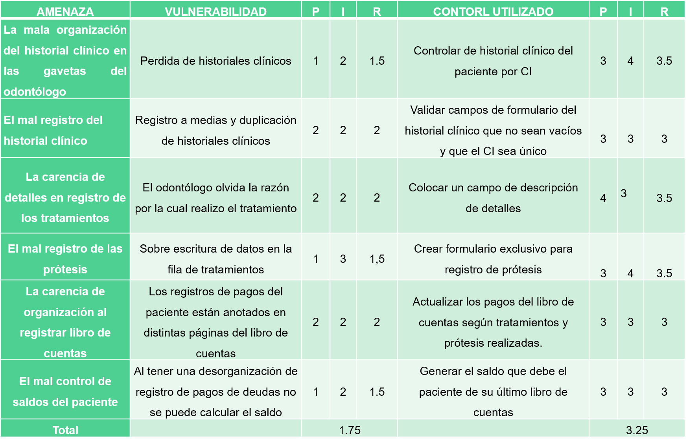

Sistema web responsive de reserva de consultas y gestion de atencion a pacientes. Caso de estudio: clinica dental maldonado
Gutierrez Maldonado Gerald Michael
Tutora: Lic. Lizbeth Jaramillo
Ingenieria de sistemas
Generalidades
Antecedentes
Clinica dental Maldonado

Odontologos

3 Salas de atencion
1 laboratorio protesis dental 9:00 - 12:00/14:30 - 20:00


Conlleva
Por Fechas


Pacientes atendidos por dia de 14 a 17
Año 2014
Tratamientos
Atencion integral adulto - niño
- Para adulto: operatoria, periodoncia, endodoncia, prótesis fija, prótesis removible y cirugía (extracción simple o quirúrgicas)
- Para niño: operatoria, pulpectomia y pulpotomia
Por especialidad
- Ortodoncia fija y removible, cirugia avanzada o estomatologica e implantologia avanzada
Protesis Dental
- Trabajos de puentes, coronas, placas parciales y totales y protesis flexible
Año 2016
Emergencia
Objetivo General
Desarrollar un sistema web responsive de reservas de consultas y gestión de atención a pacientes para coadyuvar en la organización de atención de pacientes.
Objetivos especificos
- Diseñar el modelado de negocio actual en base al análisis de los procesos actuales.
- Diseñar el modelado de negocio alternativo.
- Desarrollar el módulo de gestión de usuarios.
- Desarrollar el módulo de reservas de consultas.
- Desarrollar un módulo de Administración de historial clínico.
- Desarrollar un módulo Administración de trabajos.
- Realizar pruebas al sistema final.
Matriz de Consistencia
Marco teorico
Tecnicas de recopicalion de informacion
Metodologia de la investigacion cuantitativa
Las tecnicas mas utilizadas son: el experimento, la encuesta o sondeo y el analisis de contenido
Experimentacion
Observacion
Descripcion del fenomeno sustentada en los conceptos teoricos
Encuestas y cuestionarios
informacion
Conjunto de tecnicas destinadas a reunir datos sobre un tema
Analisis de contenido
Tecnica de Investigacion
Diseñado para estudiar cualquier tipo de problema el cual se trate de analizar
Sistemas web

 =======
=======
Marco Practico
Demostracion de la hipotesis
El desarrollo de un sistema web responsive de reserva de consultas y gestión de atención a pacientes permitirá reducir el tiempo de búsqueda de historiales clínicos y pago de trabajos, reducir el riesgo de pérdida de información y el riesgo de no atención al paciente.
Primera variable dependiente
Segunda variable dependiente
Tercera variable dependiente
Variable independiente
>>>>>>> 4fe7b549eb5b9dc0128bba889910b450ae432e55Aplicaciones web responsive
Es aquella que se ejecuta y se adapta a las distintas revoluciones y tamaños para su mejor visualizacion en diferentes dispositivos y plataformas, estas son accedidas por medio de un navegador web via internet o intranet
Marco Practico
Demostracion de la hipotesis
El desarrollo de un sistema web responsive de reserva de consultas y gestión de atención a pacientes permitirá reducir el tiempo de búsqueda de historiales clínicos y pago de trabajos, reducir el riesgo de pérdida de información y el riesgo de no atención al paciente.
Primera variable dependiente
Segunda variable dependiente
Tercera variable dependiente
Variable independiente
Viabilidades
Viabilidad tecnica
Viabilidades
Viabilidad tecnica

Cocomo
Calculo beneficio
Viabilidad Operativa
- El Administrador es la persona encargada de administrar el sistema <<<<<<< HEAD
- El Odontólogo Jefe se encarga de la atención a los pacientes =======
- El Odontólogo Jefe se encarga de la atención a los pacientes y tiene las siguientes funcionalidades >>>>>>> 4fe7b549eb5b9dc0128bba889910b450ae432e55
- El Odontólogo tiene las mismas funcionalidades del odontólogo jefe excepto que él no está autorizado para ver la lista de empleados y el registro de costos de los tratamientos y prótesis
- El Protesista se encarga de realizar las prótesis que la clínica necesita
- La Secretaria se encarga de recibir a los pacientes en la clínica dental
- El Paciente se encarga de realizar reserva de consulta para poder ser atendido en la clínica dental
Conclusiones y recomendaciones
<<<<<<< HEADConclusiones
- Entrevistas realizadas
- Diseño del negocio actual
- Codificacion e implementacion del modulo de gestion de usuarios
- Codificacion e implementacion del modulo de administracion de historial clinico
- Codificacion e implementacion del modulo de reservas
- Codificacion e implementacion del modulo de administracion de trabajos
- Pruebas al sistema final
Conclusiones
- Entrevistas realizadas
- Diseño del negocio actual
- Codificacion e implementacion del modulo de gestion de usuarios
- Codificacion e implementacion del modulo de administracion de historial clinico
- Codificacion e implementacion del modulo de reservas
- Codificacion e implementacion del modulo de administracion de trabajos
- Pruebas al sistema final
Recomendaciones
- Capacitacion a los usuarios
- Familiarizarse con el sistema
- Modulo de generacion de estadisticas
- Modulo de notificaciones para pacientes
- Modulo de gestion de pedidos de material
- Generacion de alertas de stock del material